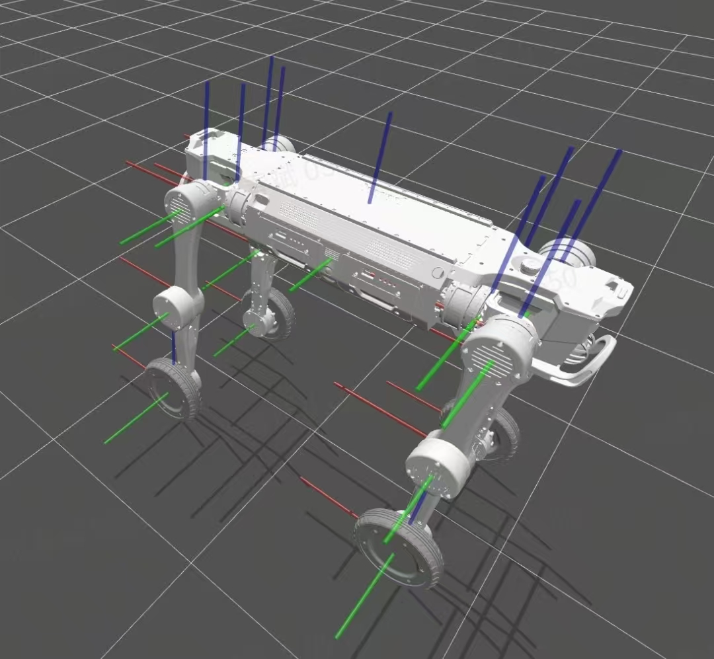

2.10 传感设备坐标定义
传感器名称 |
传感器x坐标(相对机身BASE原点)(单位mm) |
传感器y坐标 |
传感器z坐标 |
备注 |
|---|---|---|---|---|
IMU_ICM42688(运控用) |
0 |
0 |
36.2 |
|
IMU_LUA300C(车规级) |
0 |
0 |
56.9 |
|
前激光雷达AIRY |
404.3 |
0 |
-37.7 |
详见规格书 |
前摄像头IMX415 |
412.3 |
0 |
37.8 |
详见规格书 |
右前补光灯 |
420.3 |
-30.9 |
28.3 |
照射范围 120° |
左前补光灯 |
420.3 |
30.9 |
28.3 |
照射范围 120° |
后激光雷达AIRY |
-404.3 |
0 |
-37.7 |
详见规格书 |
后摄像头IMX415 |
-412.3 |
0 |
37.8 |
详见规格书 |
右后补光灯 |
-420.3 |
-30.9 |
28.3 |
照射范围 120° |
左后补光灯 |
-420.3 |
30.9 |
28.3 |
照射范围 120° |
右前超声波雷达RADAR A22 |
179.2 |
-100.2 |
50 |
详见规格书 |
左前超声波雷达RADAR A22 |
179.2 |
100.2 |
50 |
详见规格书 |
当各个关节均为零度时，各坐标系如下图。红色为 x 轴，绿色为 y 轴，蓝色为 z 轴。关节的旋转轴和旋转正方向请参考下图
